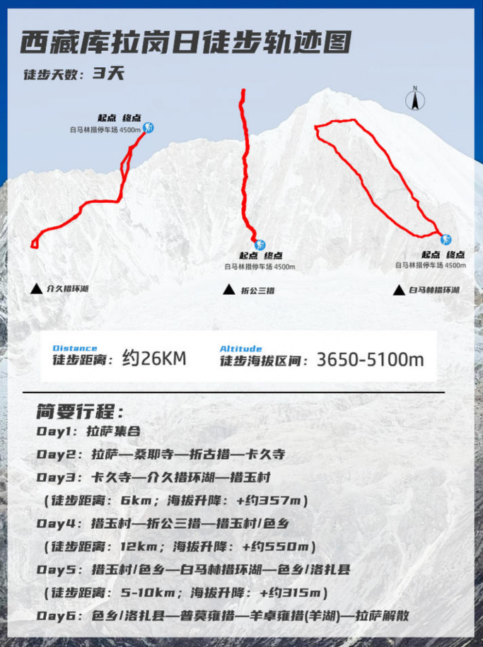

库拉岗日6天5晚徒步｜完整行程计划
徒步者联盟｜10.1集合 · 山南环线｜可勾选行李清单
🗺️ 库拉岗日徒步轨迹图

总徒步：白马林措、介久措、折公三措，可自选半环湖/全环湖
✈️ 9.29-10.09 全程每日行程（深圳往返）
深圳宝安T3 → 成都双流T1｜川航3U8708
起飞：19:20｜到达：21:55
成都过夜中转，休息储备体力，不熬夜。
成都双流T1 → 拉萨贡嘎T3｜川航3U8691
起飞：06:30｜到达：08:50
入住酒店，全天轻度适应海拔，不剧烈活动。
下午：八廓街+大昭寺广场，顺时针转经，感受老拉萨人文。
⚠️当日注意：全程慢走，多喝水，严禁剧烈跑动，当天不洗澡。
全国各地抵达拉萨集合，统一入住拉萨集合酒店。早到队员可自行前往布达拉宫、大昭寺、八廓街闲逛；初到高原以休息适应为主。晚上召开行前说明会，领队讲解线路、检查装备与边防证。
餐食：全天餐食自理
住宿：拉萨酒店标准间
海拔：约3650米
早餐后统一乘车前往山南桑耶寺，西藏第一座藏传佛教寺院。乌孜大殿融合藏、汉、印三种建筑风格，寺院布局是藏传佛教宇宙观的经典体现。沿途经过折古措，傍晚抵达卡久寺。卡久寺是莲花生大师闭关7年修行地，全称吉祥隐修院，坐落于云雾山巅，毗邻不丹。运气好可偶遇棕尾虹雉、黑熊、喜山斑羚等珍稀野生动物。
餐食：酒店早餐，午、晚餐自理
住宿：卡久寺寺庙标准间
海拔：约4019米
早餐后乘车前往徒步起点白马林措停车场，开启首日徒步。沿山坡上到山脊观景台，直面库拉岗日群峰，观赏介久措，湖水色彩变幻丰富。天气良好可近距离观赏库拉岗日雪山全貌。徒步结束返回起点，乘车前往措玉村入住。
餐食：全天餐食自理
住宿：措玉村藏式农家客栈标准间
海拔：约4160米
徒步距离：约6km｜累计爬升：约300m
⚠️当日注意：爬升较多，感觉头痛立刻原地休息。
早餐后乘车前往徒步起点，沿白马林措右侧山谷上行，海拔从4500米攀升至5000米左右。登顶远眺折公三措，遥望喜马拉雅群山，天气好时景观极为震撼。今日爬升偏大，根据自身体能量力而行。
餐食：全天餐食自理
住宿：措玉村旅馆/色乡旅馆
海拔：折公三措观景台约5050米、措玉村约4160米、色乡约3800米
徒步距离：约12km｜累计爬升：约660m
早餐后乘车前往徒步起点，天气佳可观赏库拉岗日群峰日照金山。白马林措环湖徒步，路线长短可自选，需自备路餐。探访莲花生大师修行地，眺望卡热疆雪山。体能一般可以只走到观景平台，湖边休息拍照，不必走完全环湖。李现同款山脊亭子机位就在这条路上。
餐食：全天餐食自理
住宿：色乡旅馆/洛扎县旅馆标准间
海拔：白马林措约4550米、洛扎县约3880米、色乡约3800米
徒步距离：5-10km｜累计爬升：约300m
⚠️当日注意：路面清晨有薄冰防滑；不舒服直接选择半环湖折返。
早餐后乘车返程拉萨，蒙达拉山口远眺库拉岗日。前往普莫雍措游玩，打卡“西藏贝加尔湖”，之后途经羊卓雍措，傍晚回到拉萨，主线行程正式解散。
💡当天返程的队员建议购买20:00以后起飞的航班。
餐食：酒店早餐，午、晚餐自理
住宿：无（如需代订，请提前联系领队）
海拔：约3650米
上午：布达拉宫（务必提前7天预约门票，建议租讲解器），游览白宫、红宫，看灵塔、壁画。
中午：布宫附近藏餐简餐。
下午：药王山观景台，打卡50元人民币背景布达拉宫；宗角禄康公园，拍摄布达拉宫湖面倒影。
傍晚：返回八廓街，天上邮局盖邮戳，选购伴手礼。
⚠️当日注意：徒步刚结束体力偏弱，爬布宫台阶缓慢走，中途多休息；门票一定要提前预约。
上午：西藏博物馆（免费预约），系统了解吐蕃历史、唐蕃古道、藏地文物，把前面看到的人文风景串联起来。
中午：附近就餐。
下午：扎基寺，拉萨唯一财神庙，本地信徒常来，可感受地道民间信仰。
傍晚：回酒店收拾行李，休整，晚上前往贡嘎机场搭乘航班。
⚠️当日注意：晚上航班22:55起飞，预留充足时间前往机场。
拉萨贡嘎T3 → 成都双流T1｜川航3U8688
起飞：22:55｜到达：00:40（次日凌晨）
中转停留：5小时50分钟
成都双流T1 → 深圳宝安T3｜川航3U8701
起飞：06:30｜到达：09:00
返程注意事项
1. 徒步结束身体疲劳，拉萨飞航班提前抵达机场；
2. 高原下来不要大量饮酒；
3. 徒步装备提前打包，避免行李超重。